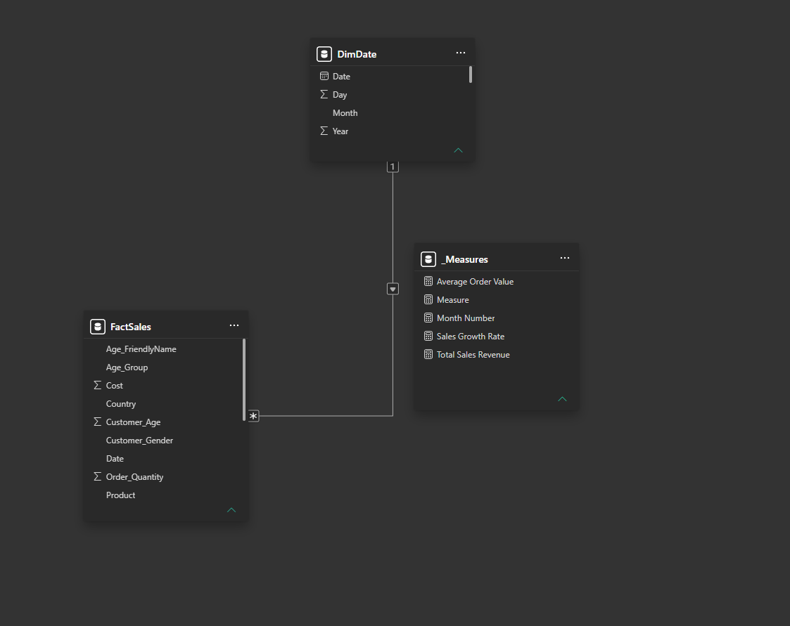
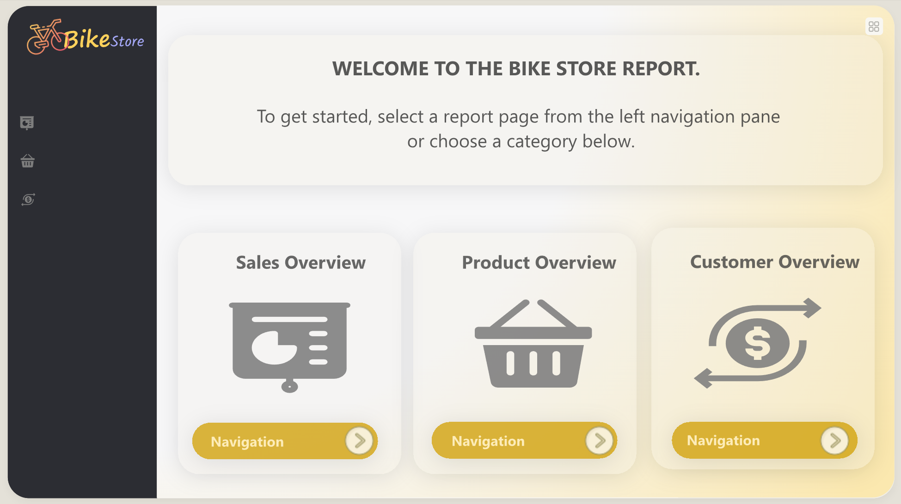
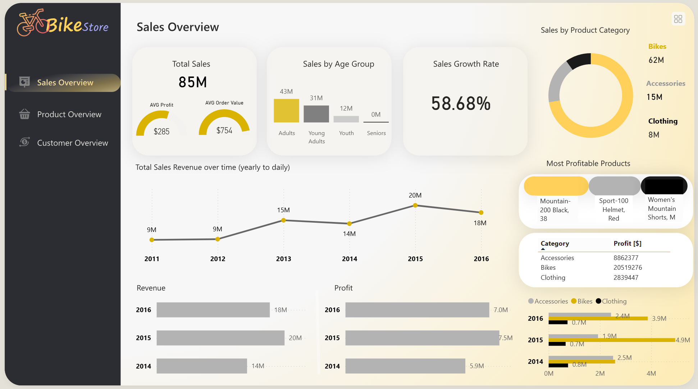
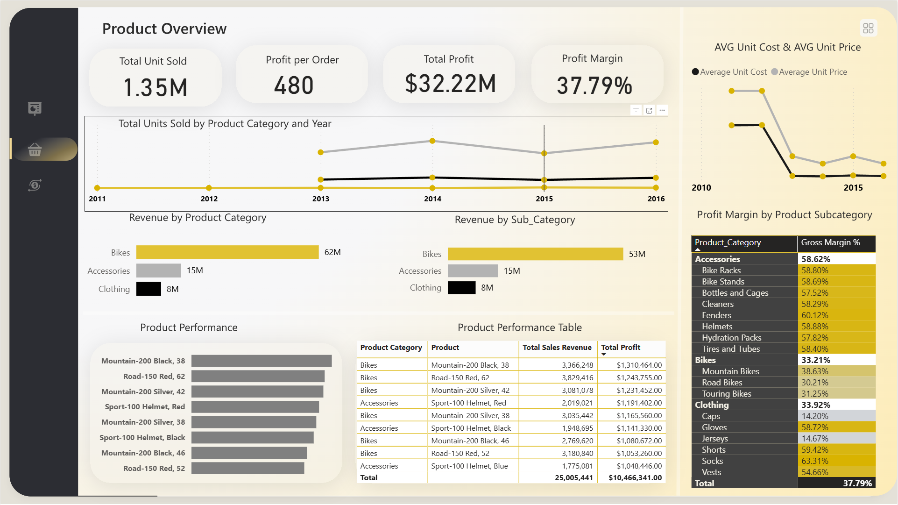
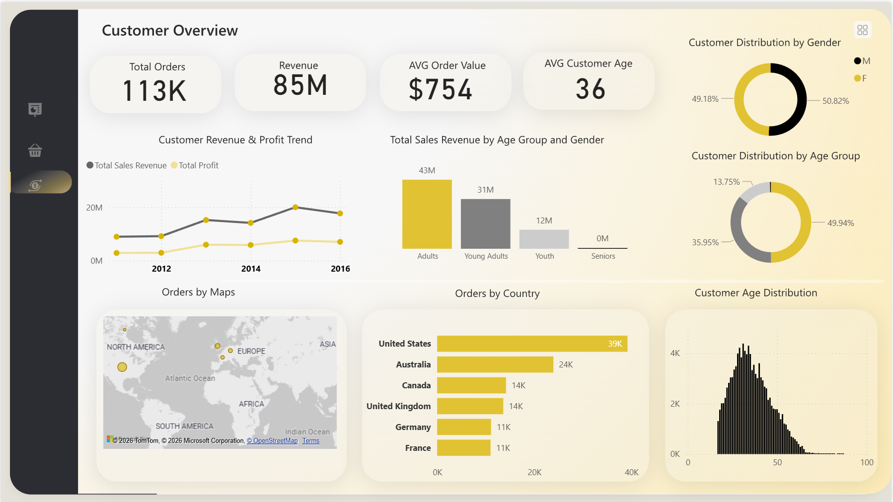

Problem biznesowy
Sieć sklepów rowerowych BikeStore potrzebowała jednego raportu, który pokaże, skąd pochodzą przychody i zysk: które kategorie i produkty sprzedają się najlepiej, jak zmienia się sprzedaż w czasie oraz kim są klienci (wiek, płeć, kraj). Celem było wsparcie decyzji o asortymencie, marketingu i obsłudze klienta na podstawie danych zamiast intuicji.
Dane i narzędzia
- Skala: 113 tys. zamówień, 85 mln przychodu, lata 2011 do 2016.
- Zakres danych: produkt, kategoria i podkategoria, koszt i cena, ilość zamówień, kraj, wiek i płeć klienta, data.
- Narzędzia: Power BI Desktop, język DAX, Excel.
Model danych
Dane ułożyłam w schemat gwiazdy: centralna tabela faktów FactSales (sprzedaż) połączona relacją jeden do wielu z wymiarem DimDate (kalendarz), co umożliwia analizę w czasie (rok, miesiąc, dzień). Miary trzymam w osobnej tabeli miar (_Measures), np. Total Sales Revenue, Average Order Value, Sales Growth Rate. Taki układ daje porządek w modelu, wydajność i poprawne filtrowanie.

Model danych: tabela faktów FactSales, wymiar DimDate i tabela miar
Strony i wizualizacje raportu
Raport ma cztery strony. Użyte wizualizacje to m.in. karty KPI, wykresy liniowe, słupkowe, pierścieniowe (donut), mapa, histogram oraz tabele. Pod każdym zrzutem opisuję, co przedstawia dana strona.
1. Strona startowa (LP)
Ekran powitalny z nawigacją do trzech sekcji raportu (Sales Overview, Product Overview, Customer Overview). Każdy kafelek to przycisk przenoszący do danej strony.

Strona startowa z nawigacją do trzech obszarów analizy
2. Sales Overview (sprzedaż)
Ogólny obraz sprzedaży:
- KPI: sprzedaż 85 mln, średni zysk 285 USD, średnia wartość zamówienia 754 USD, dynamika sprzedaży 58,68%.
- Przychód w czasie (2011 do 2016) oraz sprzedaż wg grupy wiekowej.
- Sprzedaż wg kategorii (Bikes, Accessories, Clothing), najbardziej zyskowne produkty i zysk wg kategorii.

Sales Overview: KPI, trend przychodu, sprzedaż i zysk wg kategorii
3. Product Overview (produkty)
Analiza asortymentu i rentowności:
- KPI: 1,35 mln sprzedanych sztuk, 480 zysku na zamówienie, zysk całkowity 32,22 mln, marża 37,79%.
- Sprzedaż jednostek wg kategorii i roku, średni koszt i cena jednostkowa.
- Przychód wg kategorii i podkategorii, marża wg podkategorii oraz tabela wyników produktów.

Product Overview: jednostki, przychód, marża i ranking produktów
4. Customer Overview (klienci)
Profil i wartość klientów:
- KPI: 113 tys. zamówień, 85 mln przychodu, średnia wartość zamówienia 754 USD, średni wiek klienta 36 lat.
- Przychód i zysk klientów w czasie oraz sprzedaż wg grupy wiekowej i płci.
- Rozkład klientów wg płci i wieku, zamówienia na mapie i wg kraju (USA, Australia, Kanada, Wielka Brytania, Niemcy, Francja), histogram wieku.

Customer Overview: profil klientów, sprzedaż wg krajów i rozkład wieku
Miary użyte na wizualizacjach
W raporcie zbudowałam m.in. miary DAX: Total Sales Revenue, Total Profit, Profit Margin, Average Order Value, Average Profit, Sales Growth Rate, Total Unit Sold, Profit per Order, Average Customer Age oraz Month Number do układania danych w czasie.
Kluczowe wnioski
- Rowery to motor przychodu: kategoria Bikes odpowiada za 62 mln z 85 mln przychodu (ok. 73%). Biznes mocno zależy od jednej kategorii, a akcesoria (15 mln) i odzież (8 mln) to naturalna przestrzeń na sprzedaż łączoną (cross-sell).
- Silny wzrost sprzedaży: dynamika 58,68%, a roczny przychód wzrósł z ok. 9 mln (2011) do 20 mln w szczycie, co potwierdza rosnący biznes.
- Zdrowa rentowność: marża zysku 37,79% i zysk całkowity 32,22 mln przy średnim zysku 285 USD na zamówienie.
- Profil klienta: średni wiek 36 lat i zbliżony podział płci, więc oferta trafia do szerokiej, dorosłej grupy.
- Geografia sprzedaży: największym rynkiem są Stany Zjednoczone, a w dalszej kolejności Australia i Kanada, co wskazuje, gdzie skupić marketing.
Raport na żywo
Poniżej osadzony, w pełni interaktywny raport. Klikaj, filtruj i przełączaj strony na dolnym pasku:
Otwórz raport w nowej karcie ↗